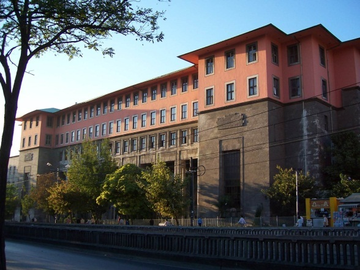

UNILOG 2015: 5. Evrensel Mantık Dünya Kongresi ve Okulu, 20 Haziran 2015 tarihinde İstanbul Üniversitesi Edebiyat Fakültesi'nde başlıyor.
20-24 Haziran 2015 tarihleri arasında gerçekleştirelecek UNILOG 2015: 5. Evrensel Mantık Okulu'nda 30 farklı ders yapılacak. Yapılacak derslere ilişkin bilgilere aşağıdaki adresten ulaşılabilir:
http://www.uni-log.org/start5s.html
25-30 Haziran 2015 tarihleri arasında gerçekleştirelecek UNILOG 2015: 5. Evrensel Mantık Dünya Kongresi'nde ise 14 farklı atölye ve 13 farklı oturum bulunuyor. Konuşmacı, atölye ve oturumlara ait bilgilere aşağıdaki adresten ulaşılabilir:
http://www.uni-log.org/start5cong.html
Davetli Konuşmacıların Listesi
▪ Melving Fitting (Dpt of Mathematics and Computer Sciences, City University of New York, USA): "Cut-free proofs for more and more logics" ▪ Graham Priest (City University of New York, USA): Workshop Philosophy of Non-Classical Logics ▪ JC Beall (Department of Philosophy, University of Connecticut, USA and University of Tasmania, Australia): "There is no logical negation" ▪ Storrs McCall (McGill, Canada): "Connexive logic based on an incompatibility operator" ▪ Luciano Floridi (Oxford Internet Institute, Oxford, UK): "In search for a conceptual logic of information" ▪ Ernest Lepore (Rutgers Center for Cognitive Science, Rutgers University, USA): "Discourse and logical form" ▪ Olivia Caramello (Dpt of Mathematics, University of Paris 7, France): "The theory of topos-theoretic 'bridges', five years later" ▪ Juliana Bueno Soler (State University of Campinas - UNICAMP, Brazil): "Paraconsistent probability theory: betting rationally under contradiction" ▪ Elena Dragalina-Chernaya (University Higher School of Economics, Moscow, Russia) ▪ Ahti-Veikko Pietarinen (University of Helsinki, Finland and Tallinn University of Technology, Estonia): "The idea of scope in logical diagrams" ▪ Irina Starikova (University of São Paulo, Brazil): "Creativity and visualisations in mathematics" ▪ Ekaterina Kubyshkina (University Panthéon Sorbonne, Paris 1, France): "Truth-functional alternative to epistemic logic and it's application to Fitch's paradox" ▪ Julie Brumberg-Chaumont (CNRS, Paris, France and European University Institute, Florence, Italy): "From syllogisms to syllogistic consequences: a turning point in the history ▪ João Marcos (Department of Informatics and Applied Mathematics, UFRN, Natal, Brazil): "Consequiland: on logics with many dimensions" ▪ Roman Murawski (Adam Mickiewicz University, Poznan, Poland): "On the way to modern logic -- the case of Polish logic" of logic" ▪ Una Stojnic (Dept of Philosophy, Rutgers University, USA): "One’s Modus Ponens: classical logic and semantics for modality" ▪ Samet Büyükada (Department of Philosophy, Istanbul Medeniyet University): "Hypothetical syllogism in Avicenna" ▪ Christian Strasser joint work with Jesse Heyninck (Ruhr-University, Bochum, Germany): "Argumentation semantics for adaptive logics" ▪ Rodrigo Freire (University of Brasilia, Brazil): "First-order logic and first-order function" ▪ Gordana Dodig-Crnkovic (Mälardalen University, Sweden): "A dual representation theory of quantum Systems and its ontological consequences" ▪ Ahmet Çevik (Middle East Technical University, Ankara, Turkey): "Is the Church-Turing thesis the new Pythagoreanism?" ▪ Gianfranco Basti (Pontifical Lateran University, Vatican City): "A dual representation theory of quantum Systems and its ontological consequences" ▪ Eros Corraza (LCLI, The University of the Basque Country, Carleton University, Ottawa ON, Canada): "Identity Statements, Doxastic Co-Indexation, and Frege’s Puzzle" ▪ Jaan Valsiner (Clark University, USA): "James Mark Baldwin's developmental logic: a century later" ▪ Vinod Goel (York University, Toronto, Canada): "Is there a logical reasoning module in the brain?" ▪ Tony Veale (UCD School of Computer Science and Informatics, Dublin, Ireland) ▪ Maarten McKubre-Jordens (University of Canterbury, Christchurch, New Zealand): "Invitation to non-classical mathematics" Düzenleyen Kurumlar: Mantık Uygulama ve Araştırma Derneği İstanbul Üniversitesi Edebiyat Fakültesi Felsefe Bölümü İstanbul Üniversitesi Mantık Uygulama ve Araştırma Merkezi<| 09/06/2015 |
| 2298 defa okundu |
|
|